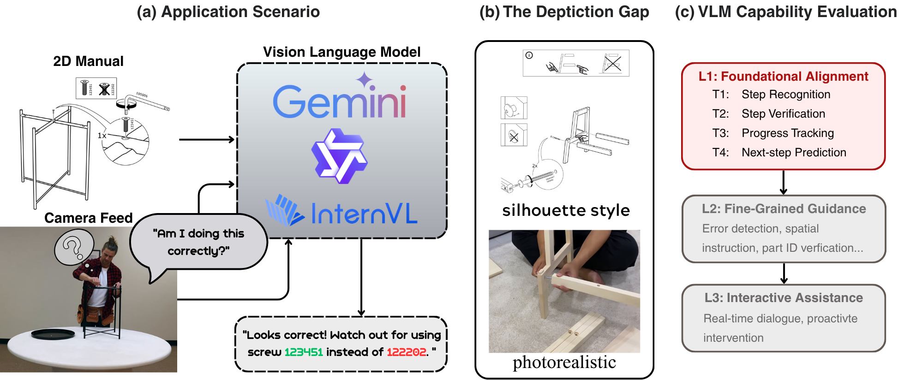
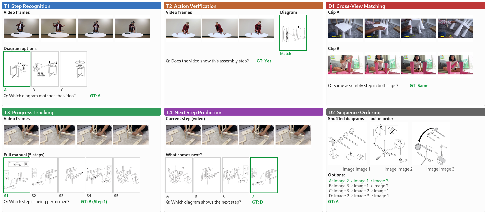
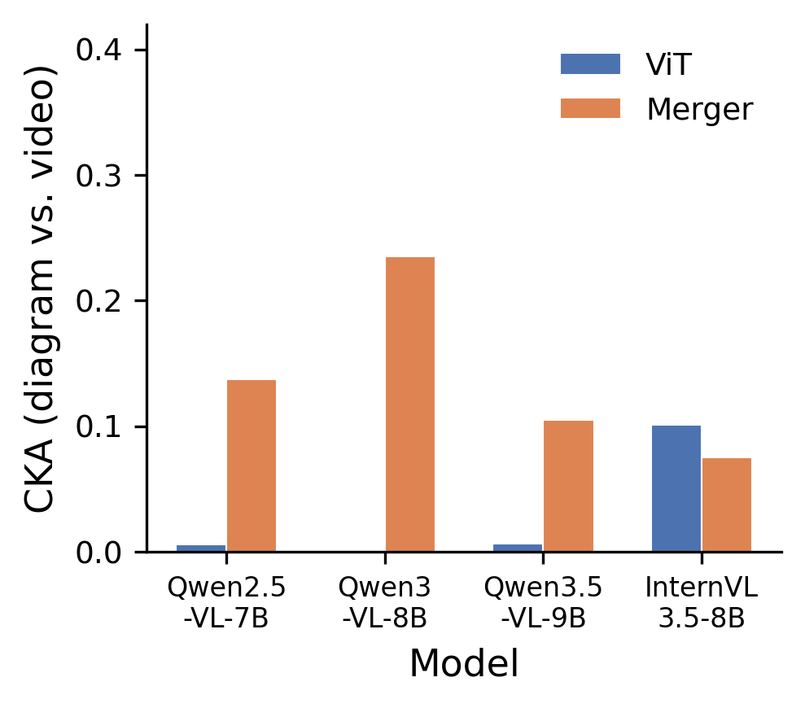
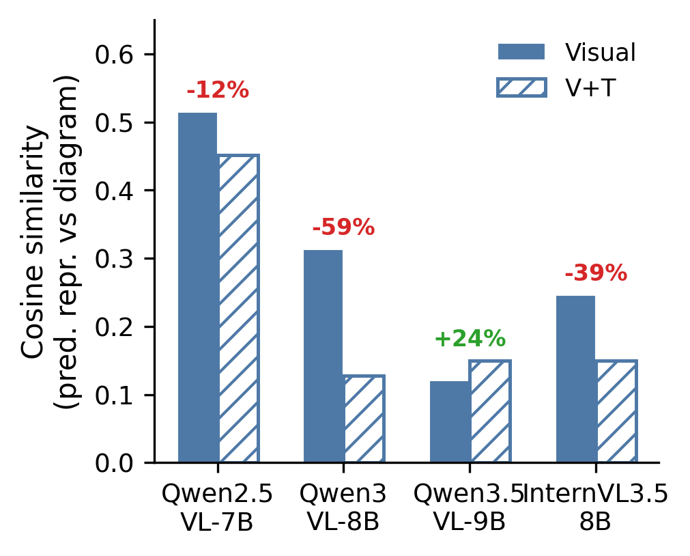
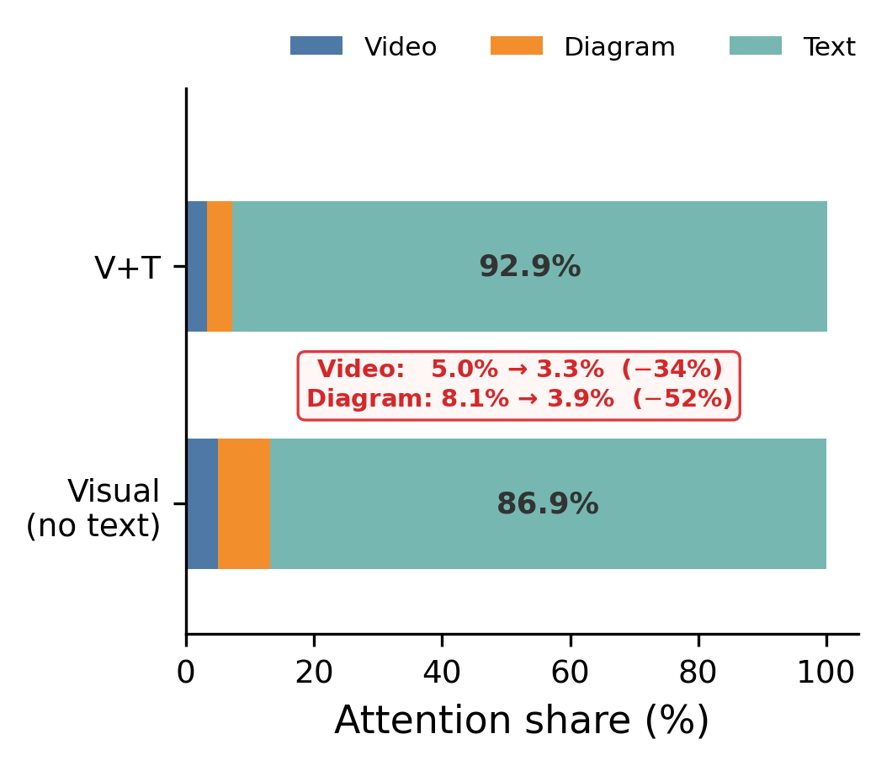
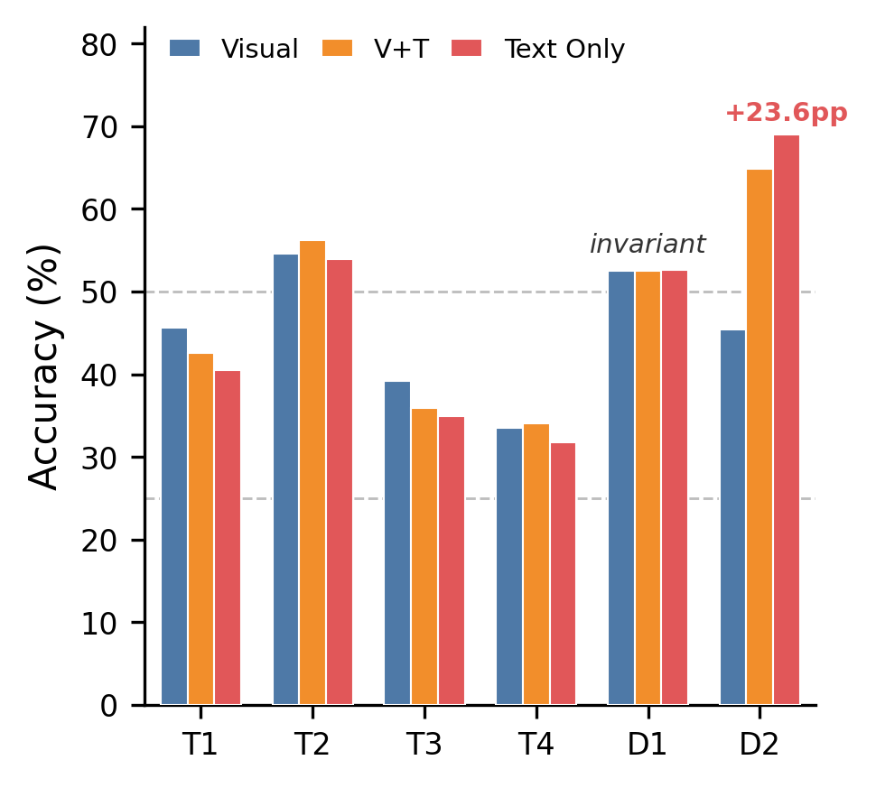

Benchmarking and Mechanistic Analysis of Vision-Language Models
for Cross-Depiction Assembly Instruction Alignment
Can VLMs understand wordless assembly diagrams well enough to match them with real-world video? IKEA-Bench systematically evaluates this cross-depiction alignment ability across 29 furniture products.

Tasks span cross-modal alignment (matching diagrams to video) and procedural reasoning (understanding assembly sequences).
| Code | Task | Description | Type | N |
|---|---|---|---|---|
| T1 | Step Recognition | Which diagram matches the action in the video? | 4-way MC | 320 |
| T2 | Action Verification | Does this video match this diagram? | Binary | 350 |
| T3 | Progress Tracking | Which step in the full sequence is happening now? | 4-way MC | 334 |
| T4 | Next-Step Prediction | What diagram comes after the current video action? | 4-way MC | 204 |
| D1 | Video Discrimination | Do two video clips show the same assembly step? | Binary | 350 |
| D2 | Instruction Comprehension | What is the correct order of three shuffled diagrams? | 4-way MC | 65 |

Accuracy (%) under the Visual baseline setting. Even the best model reaches only 65.9% average — well below human-level performance on these tasks.
| # | Model | Params | T1 | T2 | T3 | T4 | D1 | D2 | Avg |
|---|---|---|---|---|---|---|---|---|---|
| 🥇 | Gemini-3-Flash | - | 65.3 | 68.6 | 65.6 | 43.1 | 71.1 | 81.5 | 65.9 |
| 🥈 | Gemini-3.1-Pro | - | 62.8 | 65.1 | 65.0 | 41.7 | 67.4 | 76.9 | 63.2 |
| 🥉 | Qwen3.5-27B | 27B | 59.4 | 62.9 | 59.3 | 41.2 | 63.7 | 70.8 | 59.6 |
| 4 | InternVL3.5-38B | 38B | 54.4 | 61.4 | 47.3 | 37.7 | 61.4 | 67.7 | 55.0 |
| 5 | Qwen3.5-9B | 9B | 57.8 | 63.7 | 46.7 | 38.2 | 63.1 | 58.5 | 54.7 |
| 6 | Qwen3-VL-8B | 8B | 53.1 | 56.6 | 49.4 | 39.7 | 58.3 | 58.5 | 52.6 |
| 7 | Qwen3-VL-30B-A3B | 30B | 48.8 | 58.3 | 50.6 | 34.3 | 60.0 | 56.9 | 51.5 |
| 8 | GLM-4.1V-9B | 9B | 48.4 | 55.7 | 43.7 | 35.8 | 50.3 | 47.7 | 46.9 |
| 9 | MiniCPM-V-4.5 | 8B | 49.7 | 55.7 | 41.0 | 32.8 | 50.0 | 50.8 | 46.7 |
| 10 | Qwen2.5-VL-7B | 7B | 49.1 | 50.9 | 35.0 | 36.8 | 46.0 | 53.8 | 45.3 |
| 11 | Gemma3-27B | 27B | 43.1 | 55.7 | 37.1 | 31.4 | 53.7 | 41.5 | 43.8 |
| 12 | InternVL3.5-8B | 8B | 39.4 | 53.7 | 36.5 | 31.4 | 49.4 | 50.8 | 43.5 |
| 13 | Qwen2.5-VL-3B | 3B | 42.8 | 51.1 | 35.6 | 28.9 | 48.3 | 52.3 | 43.2 |
| 14 | Qwen3.5-2B | 2B | 44.4 | 56.6 | 32.9 | 36.3 | 51.4 | 36.9 | 43.1 |
| 15 | Qwen3-VL-2B | 2B | 42.2 | 50.0 | 29.6 | 34.8 | 50.0 | 26.2 | 38.8 |
| 16 | Gemma3-12B | 12B | 35.3 | 49.7 | 35.9 | 28.4 | 49.1 | 32.3 | 38.5 |
| 17 | Gemma3-4B | 4B | 39.4 | 50.3 | 27.8 | 29.4 | 47.7 | 20.0 | 35.8 |
| 18 | LLaVA-OV-8B | 8B | 35.3 | 46.3 | 27.8 | 29.4 | 41.4 | 27.7 | 34.7 |
| 19 | InternVL3.5-2B | 2B | 33.4 | 50.3 | 29.9 | 23.0 | 48.6 | 20.0 | 34.2 |
| - | Random | - | 25.0 | 50.0 | 25.0 | 25.0 | 50.0 | 25.0 | 33.3 |
Three key insights from evaluating 19 VLMs across 3 alignment strategies.
All 17 open-source models perform worse on D2 (instruction ordering) with Visual input than with Text Only — they struggle to read diagrams they were supposedly trained on. Text descriptions consistently rescue comprehension.
Adding text descriptions boosts diagram understanding (D2: +24pp) but degrades cross-modal alignment (T1: −6pp). Text acts as a shortcut — models rely on text matching and attend less to visual content.
Qwen3.5-9B (9B) outperforms InternVL3.5-38B (38B) and Gemma3-27B (27B) on cross-depiction tasks. Model family matters more than parameter count for diagram understanding.
We probe why models fail at diagram understanding by examining three processing stages: visual encoding, language model reasoning, and attention routing.

CKA similarity between diagram and video representations is moderate at the ViT level (0.43–0.58) and drops further after the visual merger, confirming a representational gap.

When text descriptions are added, diagram influence on the LLM's prediction drops 59% while text influence increases 24%. The model switches from visual to text-mediated reasoning.

When text is added, per-token attention to diagram tokens drops 52% while text tokens absorb the freed attention. The model learns to bypass diagram processing entirely.

Cross-modal retrieval (diagram→video) fails even with strong within-modality performance, pinpointing the ViT's inability to create aligned cross-depiction representations.
The entire dataset is on HuggingFace — no manual setup needed.
If you use IKEA-Bench in your research, please cite our paper.